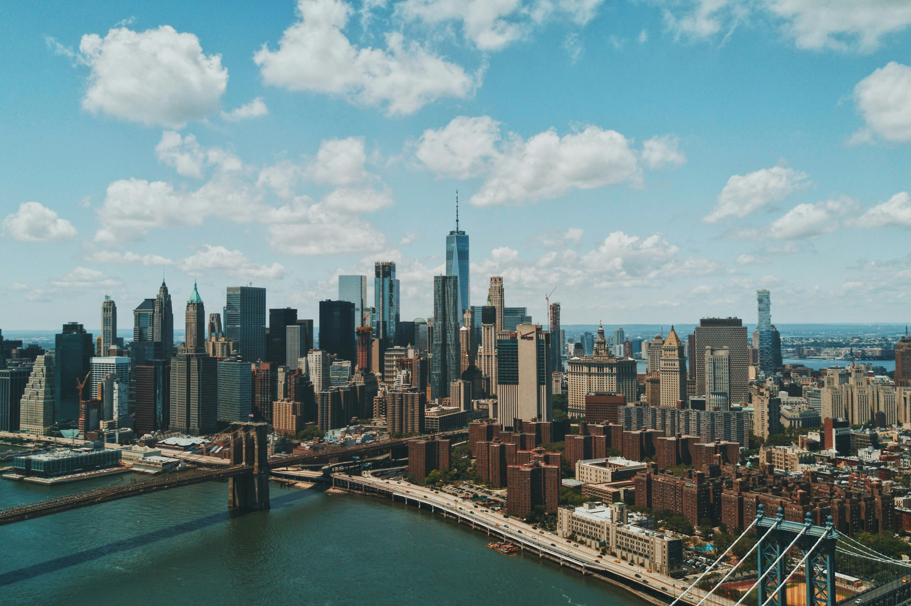

Paris: City of Lights


Experience the romance of Paris with its iconic landmarks such as the Eiffel Tower, Louvre Museum, and Notre-Dame Cathedral.
Indulge in exquisite French cuisine and stroll along the charming streets of Montmartre.
Don't miss out on a leisurely boat cruise along the Seine River, where you can admire the city's stunning architecture illuminated at night.
Tokyo: Vibrant Metropolis


Discover the bustling streets of Tokyo, where tradition meets modernity in a seamless blend.
Explore the historic Asakusa district and marvel at the magnificent Senso-ji Temple.
Experience the sensory overload of Shibuya Crossing, one of the busiest intersections in the world, and immerse yourself in the vibrant nightlife of Shinjuku.
New York: The Big Apple


Explore the iconic landmarks of New York City, from the towering skyscrapers of Manhattan to the green oasis of Central Park.
Take in breathtaking views from the top of the Empire State Building and stroll along the scenic High Line.
Indulge in world-class shopping on Fifth Avenue, catch a Broadway show in Times Square, and sample diverse cuisine from around the globe in this melting pot of cultures.
Sydney: Harbour City


Experience the beauty of Sydney with its iconic Sydney Opera House and Harbour Bridge dominating the city skyline.
Relax on the golden sands of Bondi Beach or take a ferry ride to the picturesque Manly Beach.
Explore the historic Rocks district, dine at world-class restaurants overlooking the harbour, and embark on a coastal walk to discover hidden gems along the coastline.
Dubai: City of Contrasts


Discover the opulence of Dubai with its futuristic skyscrapers, luxurious shopping malls, and extravagant entertainment options.
Ascend the world's tallest building, the Burj Khalifa, for panoramic views of the city.
Indulge in tax-free shopping at Dubai Mall, experience the thrill of desert safari adventures, and unwind at luxurious beach resorts along the stunning coastline.